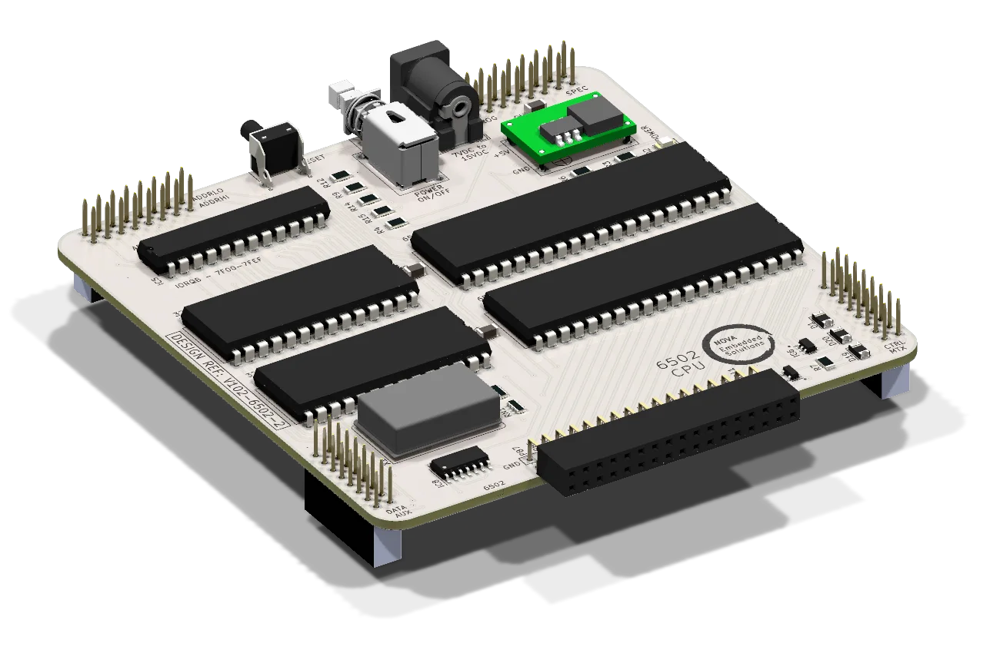
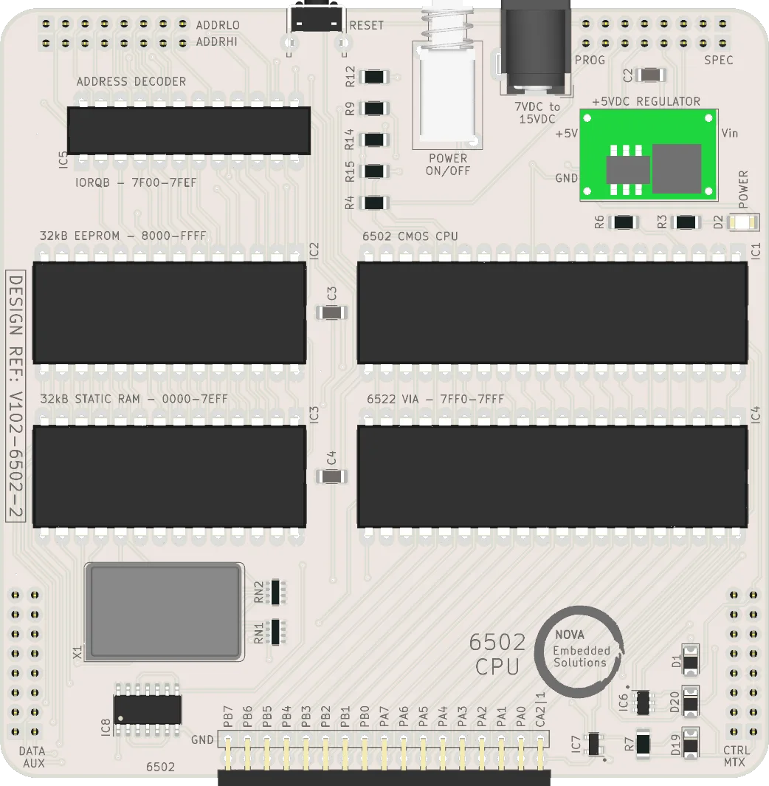

V102-6502-2
6502 SBC
A 6502 that speaks the Z80 bus well enough to share its I/O and video boards.
- CPU
- W65C02S at 1 MHz
- ROM
- 32 K EEPROM, 8000–FFFF
- RAM
- 0000–7EFF
- I/O
- VIA at 7FF0, bus window at 7F00
- Glue
- ATF20V8B

What's on the board

How it works
- W65C02S at 1 MHz: the 4 MHz can drives bus CLK, a 74HC74 divides by 4 for PHI2
- ROM 8000–FFFF, RAM 0000–7EFF, VIA at 7FF0–7FFF
- PLD maps CPU 7F00–7FEF to a Z80-style I/O cycle on port 00–EF: IORQB during PHI2 high, RDB/WRB from R/W
- BUSRQ drives the CPU's BE pin, three-stating it at once; ROMCSX forces the ROM and masks RAM and VIA
What it took
- Bridged two CPU families: 6502 memory-mapped I/O presented as Z80 ports, so the same I/O and VDP boards work unchanged
- Z80-peripheral write timing studied on the scope against the 6502 cycle; PIO writes confirmed working
- Bus hand-over without BUSAK: BE releases the 65C02 immediately
Next revision
- RAM and VIA both drive the bus on VIA reads: exclude 7FF0–7FFF from RAM
- Mask IORQB with ROMCSX while programming; pull R/W up
- Zilog interrupts need an acknowledge and RETI the 6502 can't give (CTC loops)
- PLD full: move to ATF22V10. RDY, NMIB on resistors; decoupling
One port, two languages
The Z80 has a separate space for I/O. The 6502 has only memory. The PLD opens a window at 7F00–7FEF and turns any access there into a Z80-style I/O cycle, so the other boards see the bus they were designed for.
| Device | Z80 writes | 6502 writes |
|---|---|---|
| CTC timer | OUT (08h),A | STA $7F08 |
| SIO serial | OUT (0Ch),A | STA $7F0C |
| PIO parallel | OUT (10h),A | STA $7F10 |
| VDP data | OUT (01h),A | STA $7F01 |
| VDP control | OUT (02h),A | STA $7F02 |
| 82C55 port A | OUT (24h),A | STA $7F24 |
| LCD command | OUT (30h),A | STA $7F30 |
Zilog interrupts are the part that does not cross over yet: they need an acknowledge cycle and a RETI that the 6502 cannot give.
Schematic
Tap to open it full screen, then pinch, scroll or drag to explore. It stays sharp at any zoom.
Photo and files
Live photo: board-6502.jpgThe built 6502 SBCStraight down or three-quarter view, chips fitted, plain background.
Downloads
Read the PLD source, V102-6502-00
Name v102-6502-00 ; PartNo xx ; Date 14/7/23 ; Revision 001 ; Designer Nigel ; Company xxx ; Assembly None ; Location ; Device g20v8a; // test this with g22v10 cos g20v8a doesnt work with protius /* *************** INPUT PINS *********************/ PIN 1 = CLK ; PIN 2 = A0 ; PIN 3 = A1 ; PIN 4 = A2 ; PIN 5 = A3 ; PIN 6 = A4 ; PIN 7 = A5 ; PIN 8 = A6 ; PIN 9 = A7 ; PIN 10 = A8 ; PIN 11 = A9 ; PIN 13 = A15 ; PIN 14 = A14 ; PIN 20 = A13 ; PIN 21 = A12 ; PIN 22 = A11 ; PIN 23 = A10 ; PIN 15 = ROMCSX ; FIELD ADDR = [A15..A0]; /* *************** OUTPUT PINS *********************/ PIN 19 = RAMCSB ; // xxxx PIN 18 = ROMCSB ; // xxxx PIN 17 = IORQB ; // xxxx PIN 16 = VIACSB ; // xxxx /* *************** INTERMEDIATE EQUATIONS **************/ IO = ADDR:[7F00..7FEF] ; /* *************** LOGIC EQUATIONS *********************/ !RAMCSB = ADDR:[0000..7fff] & !IO & !ROMCSX ; // 0000-7eff (lower 32k ram space with iorq and via not active) - and external romcsx not active !IORQB = IO & CLK ; // 7F00-7FEF and external romcsx not active - but only on second half of cpu clock cycle (pos) !VIACSB = ADDR:[7FF0..7FFF] & !ROMCSX ; // 7FF0-7FFF and external romcsx not active !ROMCSB = ADDR:[8000..FFFF] # ROMCSX ; // 8000-FFFF or external romcsx is actove